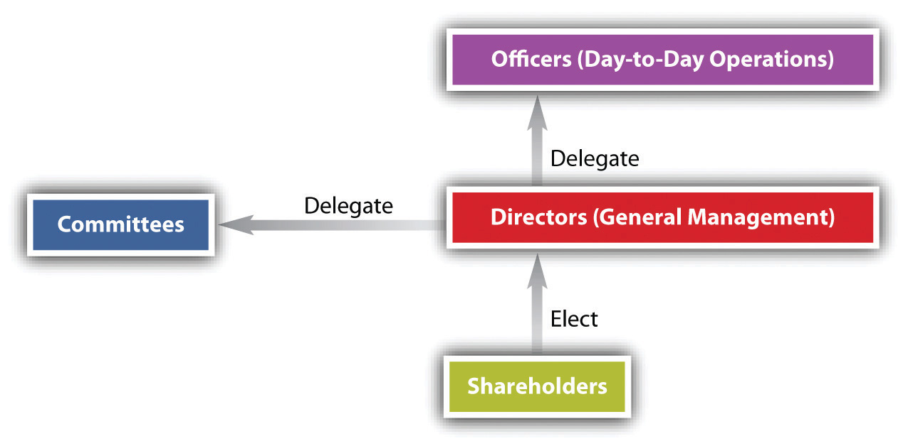

Directors derive their power to manage the corporation from statutory law. Section 8.01 of the Revised Model Business Corporation Act (RMBCA) states that “all corporate powers shall be exercised by or under the authority of, and the business and affairs of the corporation managed under the direction of, its board of directors.” A director is a fiduciaryA person to whom power is entrusted for the benefit of another., a person to whom power is entrusted for another’s benefit, and as such, as the RMBCA puts it, must perform his duties “in good faith, with the care an ordinarily prudent person in a like position would exercise under similar circumstances” (Section 8.30). A director’s main responsibilities include the following: (1) to protect shareholder investments, (2) to select and remove officers, (3) to delegate operating authority to the managers or other groups, and (4) to supervise the company as a whole.
Under RMBCA Section 8.25, the board of directors, by majority vote, may delegate its powers to various committees. This authority is limited to some degree. For example, only the full board can determine dividends, approve a merger, and amend the bylaws. The delegation of authority to a committee does not, by itself, relieve a director from the duty to exercise due care.
Figure 27.2 The Corporate Governance Model
The directors often delegate to officers the day-to-day authority to execute the policies established by the board and to manage the firm (see Figure 27.2 "The Corporate Governance Model"). Normally, the president is the chief executive officer (CEO) to whom all other officers and employees report, but sometimes the CEO is also the chairman of the board.
Section 8.03 of the RMBCA provides that there must be one director, but there may be more, the precise number to be fixed in the articles of incorporation or bylaws. The initial members of the board hold office until the first annual meeting, when elections occur. (The initial board members are permitted to succeed themselves.) Directors are often chosen to serve one-year terms and must be elected or reelected by the shareholders annually, unless there are nine or more directors. In that case, if the articles of incorporation so provide, the board may be divided into two or three roughly equal classes and their terms staggered, so that the second class is elected at the second annual meeting and the third at the third annual meeting. A staggered board allows for the continuity of directors or as a defense against a hostile takeover.
The statutes do not catalog qualifications that directors are expected to possess. In most states, directors need not be residents of the state or shareholders of the corporation unless required by the articles of incorporation or bylaws, which may also set down more precise qualifications if desired.
Until the 1970s, directors tended to be a homogeneous lot: white male businessmen or lawyers. Political change—rising consumer, environmental, and public interest consciousness—and embarrassment stemming from disclosures made in the wake of Securities and Exchange Commission (SEC) investigations growing out of Watergate prompted companies to diversify their boardrooms. Today, members of minority groups and women are being appointed in increasing numbers, although their proportion to the total is still small. Outside directors (directors who are not employees, officers, or otherwise associated with the corporation; they are also called nonexecutive directors) are becoming a potent force on corporate boards. The trend to promote the use of outside directors has continued—the Sarbanes-Oxley Act of 2002 places emphasis on the use of outside directors to provide balance to the board and protect the corporation’s investors.
In 1978, one week before he was scheduled to unveil the 1979 Mustang to trade journalists in person, Lee Iacocca, president of the Ford Motor Company, was summarily fired by unanimous vote of the board of directors, although his departure was billed as a resignation. Iacocca was reported to have asked company chairman Henry Ford II, “What did I do wrong?” To which Ford was said to have replied, “I just don’t like you.”“Friction Triggers Iacocca Ouster,” Michigan Daily, July 15, 1978. To return to our usual example: BCT Bookstore is set to announce its acquisition of Borders Group, Inc., a large book retailer that is facing bankruptcy. Alice, one of BCT’s directors, was instrumental in the acquisition. One day prior to the announcement of the acquisition, BCT’s board relieved Alice of her directorship, providing no reason for the decision. The story raises this question: May a corporate officer, or director for that matter, be fired without cause?
Yes. Many state statutes expressly permit the board to fire an officer with or without cause. However, removal does not defeat an officer’s rights under an employment contract. Shareholders may remove directors with or without cause at any meeting called for the purpose. A majority of the shares entitled to vote, not a majority of the shares represented at the meeting, are required for removal.
Directors must meet, but the statutes themselves rarely prescribe how frequently. More often, rules prescribing time and place are set out in the bylaws, which may permit members to participate in any meeting by conference telephone. In practice, the frequency of board meetings varies.
The board or committees of the board may take action without meeting if all members of the board or committee consent in writing. A majority of the members of the board constitutes a quorum, unless the bylaws or articles of incorporation specify a larger number. Likewise, a majority present at the meeting is sufficient to carry any motion unless the articles or bylaws specify a larger number.
In the past, directors were supposed to serve without pay, as shareholder representatives. The modern practice is to permit the board to determine its own pay unless otherwise fixed in the articles of incorporation. Directors’ compensation has risen sharply in recent years. The Dodd-Frank Wall Street Reform and Consumer Protection Act of 2010, however, has made significant changes to compensation, allowing shareholders a “say on pay,” or the ability to vote on compensation.
The directors exercise corporate powers. They must exercise these powers with good faith. Certain decisions may be delegated to a committee or to corporate officers. There must be at least one director, and directors may be elected at once or in staggered terms. No qualifications are required, and directors may be removed without cause. Directors, just like shareholders, must meet regularly and may be paid for their involvement on the board.